#check for NA values
table(is.na(employee))##
## FALSE
## 31320# Checking the missing value
sapply(employee, function(x) sum(is.na(x)))## ID Age Attrition
## 0 0 0
## BusinessTravel DailyRate Department
## 0 0 0
## DistanceFromHome Education EducationField
## 0 0 0
## EmployeeCount EmployeeNumber EnvironmentSatisfaction
## 0 0 0
## Gender HourlyRate JobInvolvement
## 0 0 0
## JobLevel JobRole JobSatisfaction
## 0 0 0
## MaritalStatus MonthlyIncome MonthlyRate
## 0 0 0
## NumCompaniesWorked Over18 OverTime
## 0 0 0
## PercentSalaryHike PerformanceRating RelationshipSatisfaction
## 0 0 0
## StandardHours StockOptionLevel TotalWorkingYears
## 0 0 0
## TrainingTimesLastYear WorkLifeBalance YearsAtCompany
## 0 0 0
## YearsInCurrentRole YearsSinceLastPromotion YearsWithCurrManager
## 0 0 0#check for duplicated values
sum(duplicated(employee)) ## [1] 0#see data frame dimensions and column data types
str(employee)## 'data.frame': 870 obs. of 36 variables:
## $ ID : int 1 2 3 4 5 6 7 8 9 10 ...
## $ Age : int 32 40 35 32 24 27 41 37 34 34 ...
## $ Attrition : Factor w/ 2 levels "No","Yes": 1 1 1 1 1 1 1 1 1 1 ...
## $ BusinessTravel : Factor w/ 3 levels "Non-Travel","Travel_Frequently",..: 3 3 2 3 2 2 3 3 3 2 ...
## $ DailyRate : int 117 1308 200 801 567 294 1283 309 1333 653 ...
## $ Department : Factor w/ 3 levels "Human Resources",..: 3 2 2 3 2 2 2 3 3 2 ...
## $ DistanceFromHome : int 13 14 18 1 2 10 5 10 10 10 ...
## $ Education : int 4 3 2 4 1 2 5 4 4 4 ...
## $ EducationField : Factor w/ 6 levels "Human Resources",..: 2 4 2 3 6 2 4 2 2 6 ...
## $ EmployeeCount : int 1 1 1 1 1 1 1 1 1 1 ...
## $ EmployeeNumber : int 859 1128 1412 2016 1646 733 1448 1105 1055 1597 ...
## $ EnvironmentSatisfaction : int 2 3 3 3 1 4 2 4 3 4 ...
## $ Gender : Factor w/ 2 levels "Female","Male": 2 2 2 1 1 2 2 1 1 2 ...
## $ HourlyRate : int 73 44 60 48 32 32 90 88 87 92 ...
## $ JobInvolvement : int 3 2 3 3 3 3 4 2 3 2 ...
## $ JobLevel : int 2 5 3 3 1 3 1 2 1 2 ...
## $ JobRole : Factor w/ 9 levels "Healthcare Representative",..: 8 6 5 8 7 5 7 8 9 1 ...
## $ JobSatisfaction : int 4 3 4 4 4 1 3 4 3 3 ...
## $ MaritalStatus : Factor w/ 3 levels "Divorced","Married",..: 1 3 3 2 3 1 2 1 2 2 ...
## $ MonthlyIncome : int 4403 19626 9362 10422 3760 8793 2127 6694 2220 5063 ...
## $ MonthlyRate : int 9250 17544 19944 24032 17218 4809 5561 24223 18410 15332 ...
## $ NumCompaniesWorked : int 2 1 2 1 1 1 2 2 1 1 ...
## $ Over18 : Factor w/ 1 level "Y": 1 1 1 1 1 1 1 1 1 1 ...
## $ OverTime : Factor w/ 2 levels "No","Yes": 1 1 1 1 2 1 2 2 2 1 ...
## $ PercentSalaryHike : int 11 14 11 19 13 21 12 14 19 14 ...
## $ PerformanceRating : int 3 3 3 3 3 4 3 3 3 3 ...
## $ RelationshipSatisfaction: int 3 1 3 3 3 3 1 3 4 2 ...
## $ StandardHours : int 80 80 80 80 80 80 80 80 80 80 ...
## $ StockOptionLevel : int 1 0 0 2 0 2 0 3 1 1 ...
## $ TotalWorkingYears : int 8 21 10 14 6 9 7 8 1 8 ...
## $ TrainingTimesLastYear : int 3 2 2 3 2 4 5 5 2 3 ...
## $ WorkLifeBalance : int 2 4 3 3 3 2 2 3 3 2 ...
## $ YearsAtCompany : int 5 20 2 14 6 9 4 1 1 8 ...
## $ YearsInCurrentRole : int 2 7 2 10 3 7 2 0 1 2 ...
## $ YearsSinceLastPromotion : int 0 4 2 5 1 1 0 0 0 7 ...
## $ YearsWithCurrManager : int 3 9 2 7 3 7 3 0 0 7 ...# remove some variable whose value is not changing. So standard deviation of that variable is zero. So it is not Significant for analysis. Those variable are ID, Employee Count, Employee Number, Over18, StandardHours
employee <- employee[, -c(1,10,11,23,28)]### let's see what percentage of people are leaving
employeeLeaving <- employee %>% group_by(Attrition) %>% summarise(n = n())
employeeLeaving## # A tibble: 2 x 2
## Attrition n
## <fct> <int>
## 1 No 730
## 2 Yes 140employee %>% group_by(Attrition) %>% tally() %>% ggplot(aes(x = Attrition, y = n,fill=Attrition)) + geom_bar(stat = "identity") + theme_minimal()+ labs(x="Attrition", y="Count of Attrition")+ggtitle("Number of Employees Attrit")+
geom_text(aes(label = n), vjust = -0.5, position = position_dodge(0.9))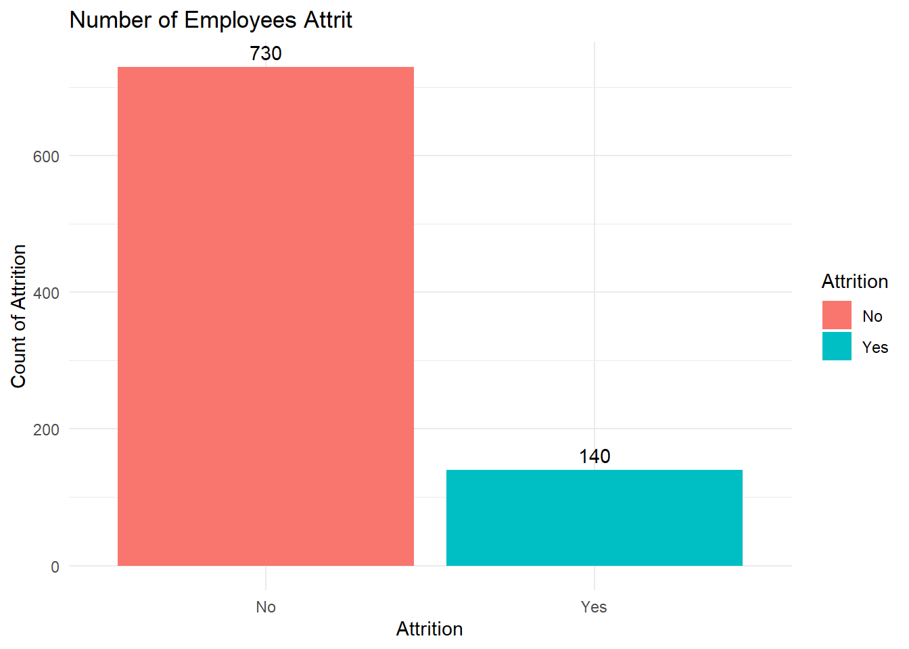
# check income levels
ggplot(employee, aes(x = MonthlyIncome, fill = Attrition)) +
geom_density(alpha = 0.6) +
labs(x = "Monthly Income", y = "") +
ggtitle("Attrition by income level") +
theme_classic()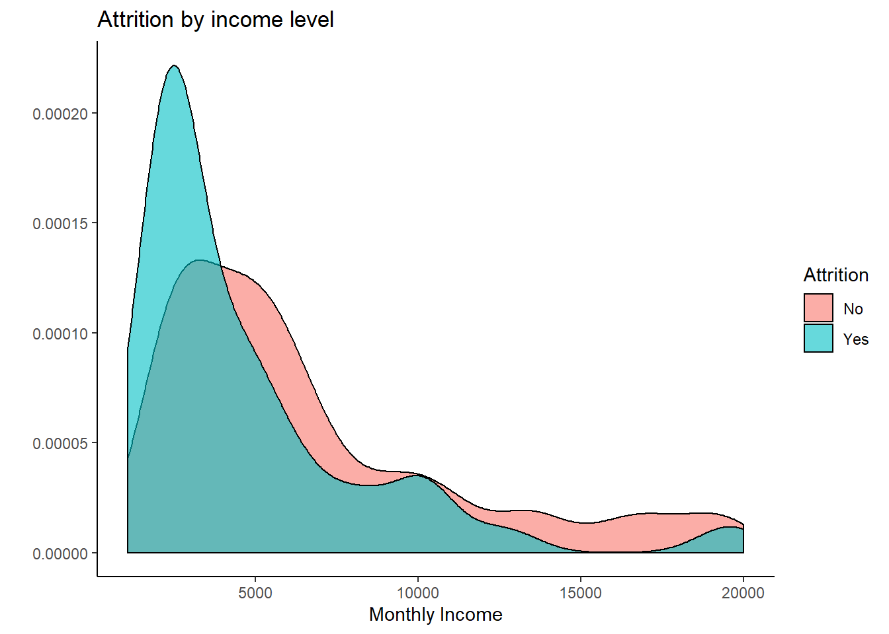
cat("There are",length(unique(employee$Department)),"unique departments in the dataset")## There are 3 unique departments in the datasetggplot(employee,aes(x=Department,group=Attrition))+geom_bar(aes(y=..prop..,fill=factor(..x..)),stat="count")+facet_grid(~Attrition)+theme(axis.text.x=element_text(angle=90,vjust=0.5),legend.position="none",plot.title=element_text(size=16,hjust=0.5))+labs(x="Department",y="Percentage",title="Attrition % Vs Department")+ geom_text(aes(label = scales::percent(..prop..), y = ..prop.. ),stat= "count",vjust =-.5) +scale_x_discrete(labels=function(x) str_wrap(x,width=10))+scale_fill_brewer(palette="Set2")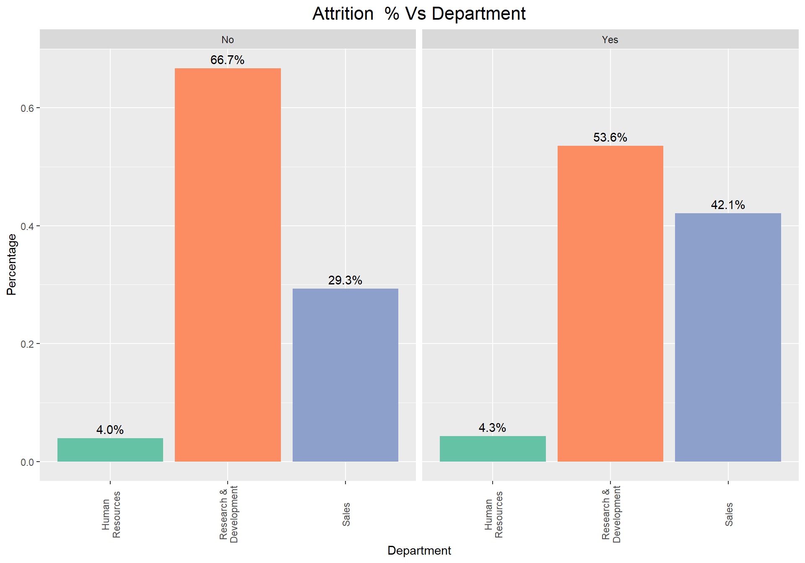
ggplot(employee,aes(x=Attrition,group=Department))+geom_bar(aes(y=..prop..,fill=factor(..x..)),stat="count")+facet_grid(~Department)+theme(axis.text.x=element_text(angle=90,vjust=0.5),legend.position="none",plot.title=element_text(size=16,hjust=0.5))+labs(x="Attrition",y="Percentage",title="Department Vs Attrition %")+ geom_text(aes(label = scales::percent(..prop..), y = ..prop.. ),stat= "count",vjust =-.5) +scale_x_discrete(labels=function(x) str_wrap(x,width=10))+scale_fill_brewer(palette="Set3")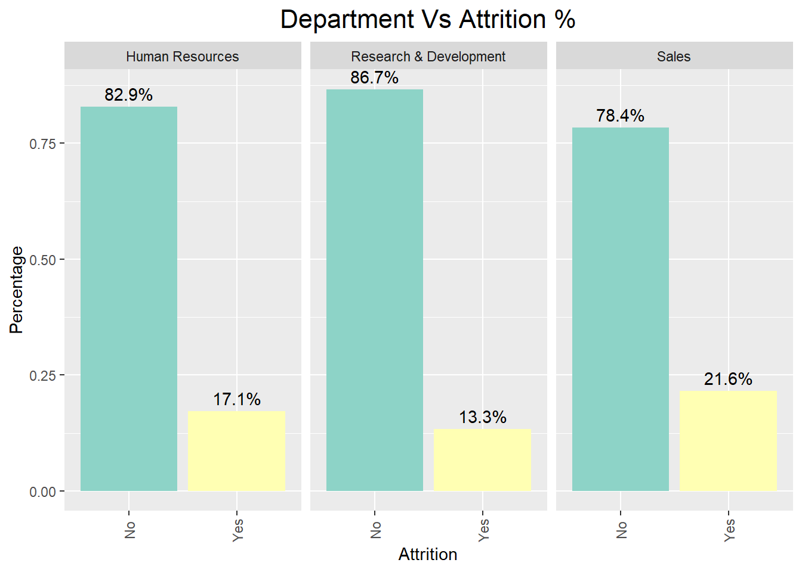
## Attrition Vs Marital Status:
ggplot(employee,aes(MaritalStatus,..count..,fill=Attrition))+geom_bar(position=position_dodge())+theme_few()+theme(legend.position="bottom",plot.title=element_text(hjust=0.5,size=16))+labs(title="Attrition Count Vs Marital Status")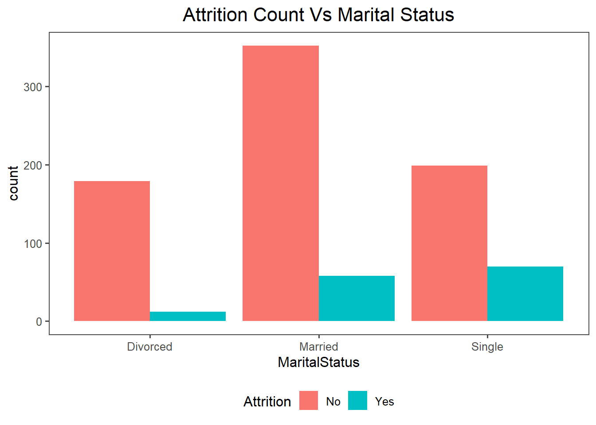
# Attrition Vs Marital Status Vs age Vs monthly income
ggplot(employee,aes(Age,MonthlyIncome,size=Age,col=factor(Attrition)))+geom_point(alpha=0.3)+theme_minimal()+facet_wrap(~MaritalStatus)+labs(x="Age",y="MonthlyIncome",title="Attrition Level Comparision ",subtitle="How attrition is observed with change in Age,Income and MaritalStatus",col="Attrition")+theme(legend.position="bottom",plot.title=element_text(size=16,hjust=0.5),plot.subtitle = element_text(size=10))+scale_color_brewer(palette="Set2")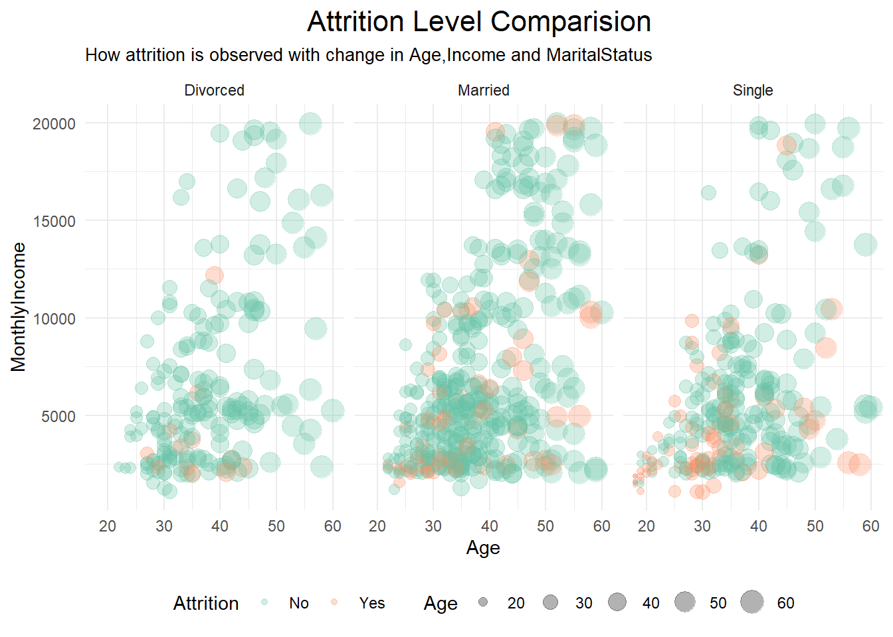
ggplot(employee,aes(DistanceFromHome,fill=Attrition))+geom_density(alpha=0.5)+theme_few()+theme(legend.position="bottom",plot.title=element_text(hjust=0.5,size=16))+labs(x="Distance from Home",title="Attrition Vs Distance From Home")+scale_fill_canva(palette="Bold feature colors")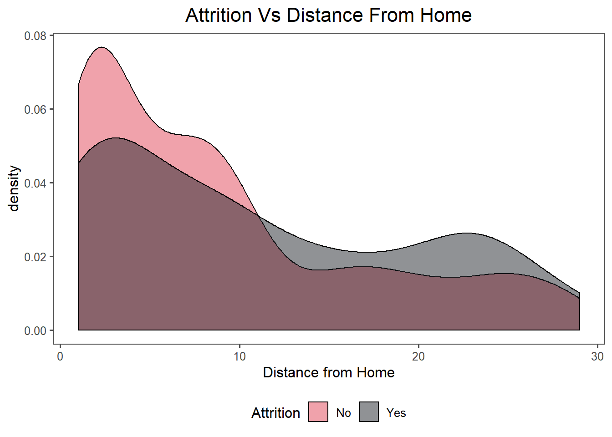
ggplot(employee,aes(Attrition,MonthlyIncome,fill=Attrition))+geom_boxplot()+theme_few()+theme(plot.title=element_text(hjust=0.5),legend.position="bottom")+coord_flip()+labs(title="Attrition Vs Monthly Income")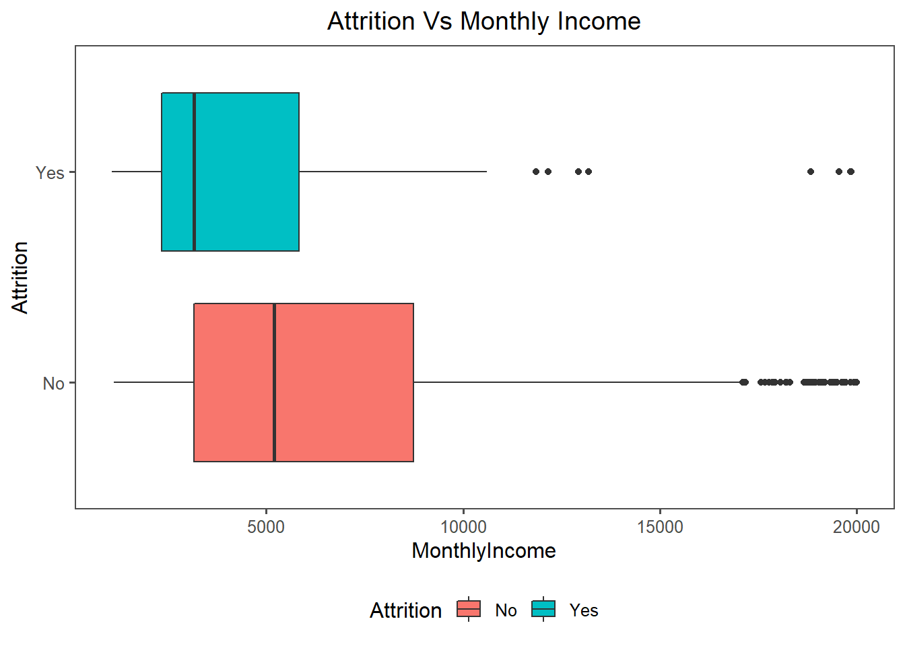
temp = employee %>% mutate(Education=factor(Education)) %>% mutate(Education=fct_recode(Education,'Below College'='1','College'='2','Bachelor'='3','Master'='4','Doctor'='5'))
ggplot(temp,aes(Education,fill=Attrition))+geom_bar(stat="count",aes(y=..count..),position=position_dodge())+theme_few()+theme_few()+theme(legend.position="bottom",plot.title=element_text(hjust=0.5,size=16),axis.text.x = element_text(angle=90))+labs(x="Education Level",y="Count",title="Trend of Attrition with Education Level")+scale_fill_canva(palette="Golden afternoon")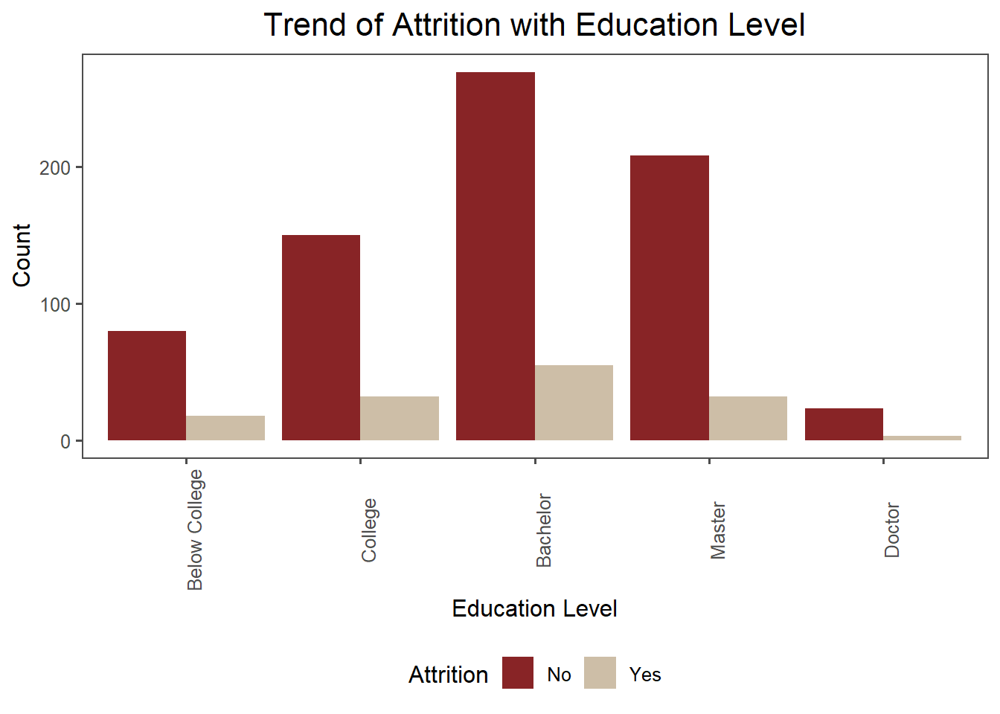
ggplot(employee,aes(Attrition,TotalWorkingYears,fill=Attrition))+geom_boxplot()+theme(legend.position="bottom",plot.title=element_text(hjust=0.5))+labs(x="Attrition",y="Years of Experience",title="Attrition trend with number of years of experience")+coord_flip()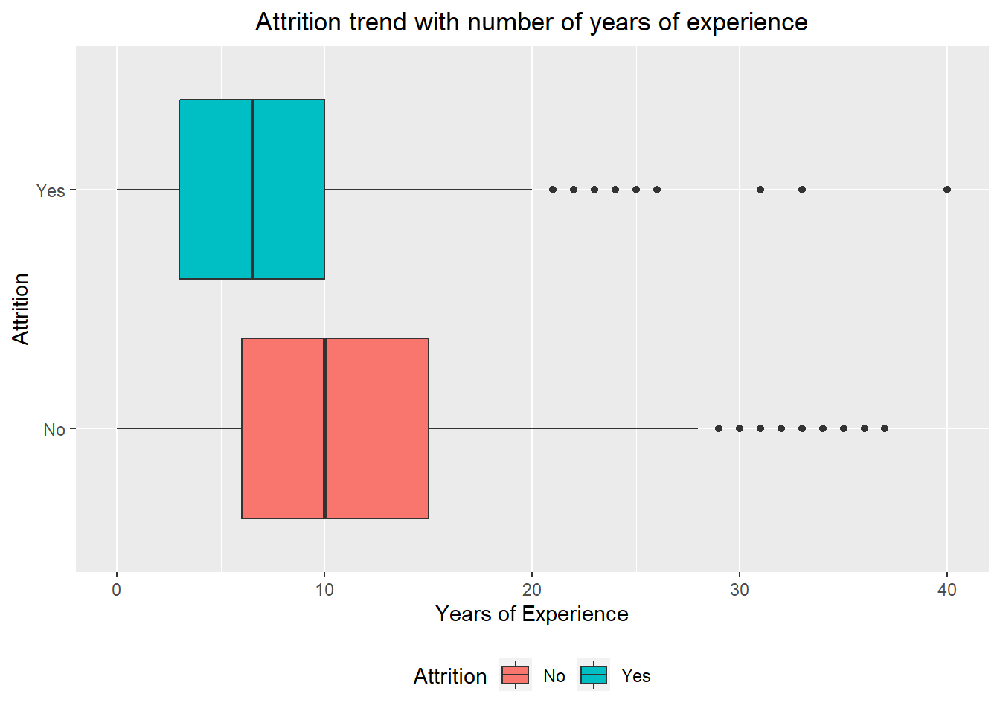
temp = employee %>% mutate(JobSatisfaction=factor(JobSatisfaction)) %>% mutate(JobSatisfaction=fct_recode(JobSatisfaction,"Low"="1","Medium"="2","High"="3","Very High"="4"))
ggplot(temp,aes(x=JobSatisfaction,group=Attrition))+geom_bar(stat="count",aes(y=..prop..,fill=factor(..x..)))+labs(x="Job Satisfaction",y="Percentage",title="Job Satisfaction Vs Attrition Rates")+facet_wrap(~Attrition)+theme_few()+theme(legend.position="none",plot.title=element_text(hjust=0.5,size=14))+geom_text(aes(label=scales::percent(..prop..),y=..prop..),stat="count",vjust=-0.5)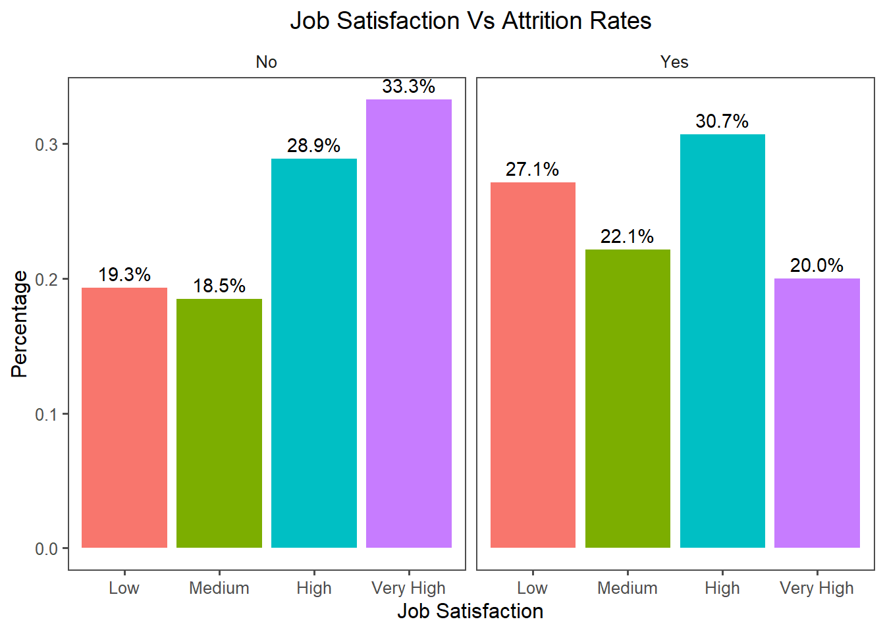
temp= employee %>% mutate(WorkLifeBalance=factor(WorkLifeBalance)) %>% mutate(WorkLifeBalance=fct_recode(WorkLifeBalance,"Bad"="1","Good"="2","Better"="3","Best"="4"))
ggplot(temp,aes(x=WorkLifeBalance,group=Attrition))+geom_bar(stat="count",aes(y=..prop..,fill=factor(..x..)))+labs(x="WorkLifeBalance",y="Percentage",title="Worklifebalance Vs Attrition Rates")+facet_wrap(~Attrition)+theme_few()+theme(legend.position="none",plot.title=element_text(hjust=0.5,size=14))+geom_text(aes(label=scales::percent(..prop..),y=..prop..),stat="count",vjust=-0.5)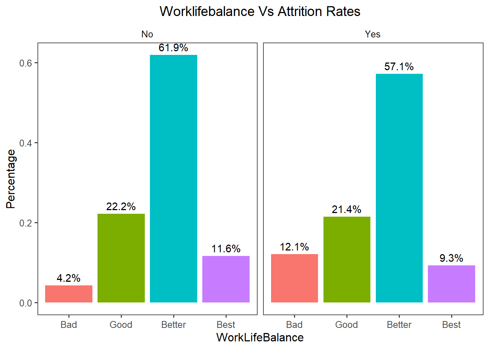
temp= employee %>% mutate(EnvironmentSatisfaction=factor(EnvironmentSatisfaction)) %>% mutate(EnvironmentSatisfaction=fct_recode(EnvironmentSatisfaction,"Low"="1","Medium"="2","High"="3","Very High"="4"))
ggplot(temp,aes(x=EnvironmentSatisfaction,group=Attrition))+geom_bar(stat="count",aes(y=..prop..,fill=factor(..x..)))+labs(x="EnvironmentSatisfaction",y="Percentage",title="Environment satisfaction Vs Attrition Rates")+facet_wrap(~Attrition)+theme_few()+theme(legend.position="none",plot.title=element_text(hjust=0.5,size=14))+geom_text(aes(label=scales::percent(..prop..),y=..prop..),stat="count",vjust=-0.5)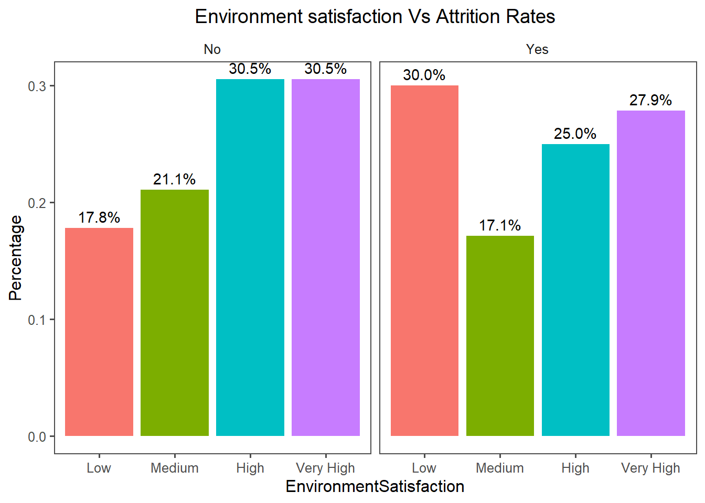
ggplot(employee,aes(x=OverTime,group=Attrition))+geom_bar(stat="count",aes(y=..prop..,fill=factor(..x..)))+labs(x="Overtime",y="Percentage",title="Overtime Vs Attrition Rates")+facet_wrap(~Attrition)+theme_few()+theme(legend.position="none",plot.title=element_text(hjust=0.5,size=14))+geom_text(aes(label=scales::percent(..prop..),y=..prop..),stat="count",vjust=-0.5)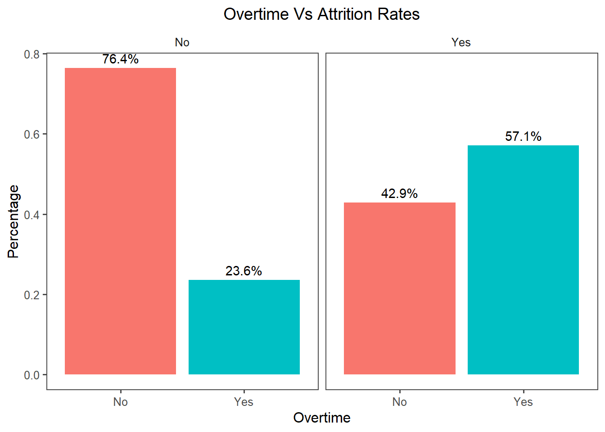
ggplot(employee,aes(TotalWorkingYears,MonthlyIncome,size=MonthlyIncome,col=factor(Attrition)))+geom_point(alpha=0.4)+theme_few()+theme(plot.title=element_text(hjust=0.5,size=16),legend.position="bottom")+labs(x="Experience",y="MonthlyIncome",title="YearsofExp Vs MonthlyIncome",col="Attrition")+geom_smooth(method="lm")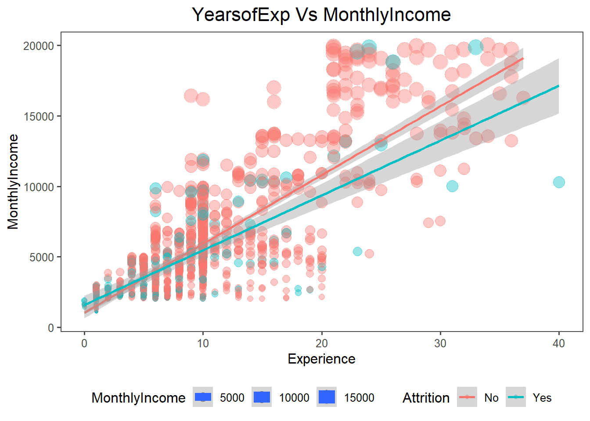
## Logistic Regression model
#Split data into train and test using cross validation in ratio of 70% train and 30% test
set.seed(2017)
train <- sample(1:nrow(employee3), nrow(employee3)*.7)
test = -train
modeldata <- employee3[train,]
validationdata <- employee3[test,]
cat("Train data has", nrow(modeldata),"observations")## Train data has 609 observationscat("Test data has", nrow(validationdata),"observations")## Test data has 261 observations# Fitting the Logistic Regression Model
logmodel <- glm(Attrition ~., family=binomial(link="logit"), data = modeldata)## Warning: glm.fit: fitted probabilities numerically 0 or 1 occurredprint(summary(logmodel))##
## Call:
## glm(formula = Attrition ~ ., family = binomial(link = "logit"),
## data = modeldata)
##
## Deviance Residuals:
## Min 1Q Median 3Q Max
## -1.7146 -0.3629 -0.1062 -0.0049 3.2962
##
## Coefficients:
## Estimate Std. Error z value Pr(>|z|)
## (Intercept) -1.089e+01 4.361e+03 -0.002 0.998008
## Age -8.203e-02 2.845e-02 -2.883 0.003941
## BusinessTravel.Travel_Frequently 2.057e+00 7.320e-01 2.811 0.004943
## BusinessTravel.Travel_Rarely 5.808e-01 6.252e-01 0.929 0.352961
## DailyRate -5.741e-04 4.551e-04 -1.261 0.207192
## Department.Research...Development 1.879e+01 4.361e+03 0.004 0.996562
## Department.Sales 1.892e+01 4.361e+03 0.004 0.996538
## DistanceFromHome 8.258e-02 2.325e-02 3.552 0.000382
## Education.2 8.404e-01 6.113e-01 1.375 0.169204
## Education.3 3.318e-01 5.489e-01 0.605 0.545501
## Education.4 1.388e-01 6.132e-01 0.226 0.820921
## Education.5 2.488e+00 1.236e+00 2.013 0.044153
## EducationField.Life.Sciences -1.218e+00 1.925e+00 -0.633 0.526981
## EducationField.Marketing -1.648e+00 1.995e+00 -0.826 0.408565
## EducationField.Medical -1.424e+00 1.929e+00 -0.738 0.460631
## EducationField.Other -1.076e+00 2.030e+00 -0.530 0.596044
## EducationField.Technical.Degree -8.578e-01 2.009e+00 -0.427 0.669456
## EnvironmentSatisfaction.2 -1.876e+00 5.583e-01 -3.360 0.000779
## EnvironmentSatisfaction.3 -1.463e+00 5.069e-01 -2.885 0.003911
## EnvironmentSatisfaction.4 -1.568e+00 5.256e-01 -2.983 0.002853
## Gender.Male 1.218e-01 3.499e-01 0.348 0.727828
## HourlyRate 1.030e-02 8.895e-03 1.158 0.246952
## JobInvolvement.2 -2.107e+00 6.526e-01 -3.228 0.001244
## JobInvolvement.3 -2.585e+00 6.158e-01 -4.198 2.70e-05
## JobInvolvement.4 -2.653e+00 8.162e-01 -3.250 0.001152
## JobLevel.2 -2.146e+00 9.957e-01 -2.155 0.031154
## JobLevel.3 8.499e-01 1.488e+00 0.571 0.567743
## JobLevel.4 5.465e-01 2.394e+00 0.228 0.819419
## JobLevel.5 4.577e+00 3.095e+00 1.479 0.139093
## JobRole.Human.Resources 1.788e+01 4.361e+03 0.004 0.996729
## JobRole.Laboratory.Technician -2.660e-01 1.068e+00 -0.249 0.803292
## JobRole.Manager 6.445e-01 1.738e+00 0.371 0.710731
## JobRole.Manufacturing.Director -1.624e+00 1.308e+00 -1.242 0.214421
## JobRole.Research.Director -2.161e+01 1.161e+03 -0.019 0.985148
## JobRole.Research.Scientist -1.361e+00 1.103e+00 -1.234 0.217106
## JobRole.Sales.Executive 1.078e+00 1.746e+00 0.617 0.537046
## JobRole.Sales.Representative 8.432e-01 1.979e+00 0.426 0.670005
## JobSatisfaction.2 -1.112e+00 5.530e-01 -2.011 0.044356
## JobSatisfaction.3 -5.166e-01 4.901e-01 -1.054 0.291818
## JobSatisfaction.4 -1.577e+00 5.160e-01 -3.057 0.002236
## MaritalStatus.Married 1.156e+00 6.084e-01 1.900 0.057474
## MaritalStatus.Single 1.579e+00 7.831e-01 2.016 0.043759
## MonthlyIncome -2.967e-04 2.095e-04 -1.416 0.156733
## MonthlyRate -9.987e-06 2.520e-05 -0.396 0.691853
## NumCompaniesWorked 3.127e-01 8.154e-02 3.835 0.000125
## OverTime.Yes 2.632e+00 4.063e-01 6.477 9.37e-11
## PercentSalaryHike 6.597e-03 7.318e-02 0.090 0.928169
## PerformanceRating.4 -2.050e-01 7.641e-01 -0.268 0.788499
## RelationshipSatisfaction.2 -1.020e+00 5.802e-01 -1.759 0.078622
## RelationshipSatisfaction.3 -1.234e+00 5.033e-01 -2.452 0.014200
## RelationshipSatisfaction.4 -1.615e+00 4.904e-01 -3.294 0.000987
## StockOptionLevel.1 -1.392e+00 5.656e-01 -2.460 0.013889
## StockOptionLevel.2 -1.185e+00 9.010e-01 -1.315 0.188396
## StockOptionLevel.3 3.952e-01 8.214e-01 0.481 0.630480
## TotalWorkingYears -4.064e-02 5.718e-02 -0.711 0.477181
## TrainingTimesLastYear -2.378e-01 1.475e-01 -1.613 0.106802
## WorkLifeBalance.2 -1.309e+00 6.708e-01 -1.951 0.051080
## WorkLifeBalance.3 -2.053e+00 6.488e-01 -3.165 0.001552
## WorkLifeBalance.4 -3.256e+00 9.002e-01 -3.617 0.000298
## YearsAtCompany 1.889e-01 7.038e-02 2.684 0.007282
## YearsInCurrentRole -8.900e-02 9.407e-02 -0.946 0.344112
## YearsSinceLastPromotion 1.992e-01 8.728e-02 2.282 0.022499
## YearsWithCurrManager -3.770e-01 9.839e-02 -3.832 0.000127
##
## (Intercept)
## Age **
## BusinessTravel.Travel_Frequently **
## BusinessTravel.Travel_Rarely
## DailyRate
## Department.Research...Development
## Department.Sales
## DistanceFromHome ***
## Education.2
## Education.3
## Education.4
## Education.5 *
## EducationField.Life.Sciences
## EducationField.Marketing
## EducationField.Medical
## EducationField.Other
## EducationField.Technical.Degree
## EnvironmentSatisfaction.2 ***
## EnvironmentSatisfaction.3 **
## EnvironmentSatisfaction.4 **
## Gender.Male
## HourlyRate
## JobInvolvement.2 **
## JobInvolvement.3 ***
## JobInvolvement.4 **
## JobLevel.2 *
## JobLevel.3
## JobLevel.4
## JobLevel.5
## JobRole.Human.Resources
## JobRole.Laboratory.Technician
## JobRole.Manager
## JobRole.Manufacturing.Director
## JobRole.Research.Director
## JobRole.Research.Scientist
## JobRole.Sales.Executive
## JobRole.Sales.Representative
## JobSatisfaction.2 *
## JobSatisfaction.3
## JobSatisfaction.4 **
## MaritalStatus.Married .
## MaritalStatus.Single *
## MonthlyIncome
## MonthlyRate
## NumCompaniesWorked ***
## OverTime.Yes ***
## PercentSalaryHike
## PerformanceRating.4
## RelationshipSatisfaction.2 .
## RelationshipSatisfaction.3 *
## RelationshipSatisfaction.4 ***
## StockOptionLevel.1 *
## StockOptionLevel.2
## StockOptionLevel.3
## TotalWorkingYears
## TrainingTimesLastYear
## WorkLifeBalance.2 .
## WorkLifeBalance.3 **
## WorkLifeBalance.4 ***
## YearsAtCompany **
## YearsInCurrentRole
## YearsSinceLastPromotion *
## YearsWithCurrManager ***
## ---
## Signif. codes: 0 '***' 0.001 '**' 0.01 '*' 0.05 '.' 0.1 ' ' 1
##
## (Dispersion parameter for binomial family taken to be 1)
##
## Null deviance: 556.76 on 608 degrees of freedom
## Residual deviance: 265.40 on 546 degrees of freedom
## AIC: 391.4
##
## Number of Fisher Scoring iterations: 18# Accessing the predictive ability of the logistic regression model
log_pred <- predict(logmodel,newdata=validationdata,type='response')
log_pred <- ifelse(log_pred>=0.5,1,0)
confusionMatrix(factor(log_pred),factor(validationdata$Attrition))## Confusion Matrix and Statistics
##
## Reference
## Prediction 0 1
## 0 211 14
## 1 14 22
##
## Accuracy : 0.8927
## 95% CI : (0.8487, 0.9275)
## No Information Rate : 0.8621
## P-Value [Acc > NIR] : 0.08585
##
## Kappa : 0.5489
##
## Mcnemar's Test P-Value : 1.00000
##
## Sensitivity : 0.9378
## Specificity : 0.6111
## Pos Pred Value : 0.9378
## Neg Pred Value : 0.6111
## Prevalence : 0.8621
## Detection Rate : 0.8084
## Detection Prevalence : 0.8621
## Balanced Accuracy : 0.7744
##
## 'Positive' Class : 0
## # Plotting the ROC curve
res <- predict(logmodel, modeldata, type = "response")
ROCRPred <- prediction(res, modeldata$Attrition)
ROCRPerf <- performance(ROCRPred,"tpr","fpr")
plot(ROCRPerf,colorize = TRUE, print.cutoffs.at = seq(0.1, by = 0.1))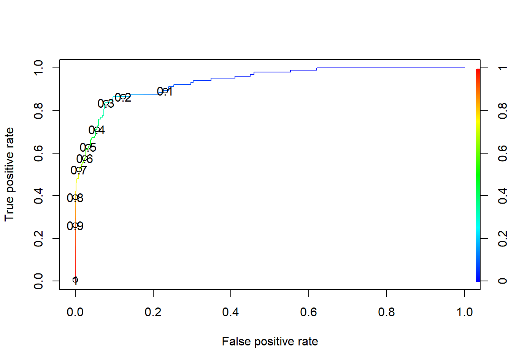
## k-NN model having 70-30 train/test Cross Validation along with hyperparamater tuning
splitPerc = .7
iterations = 100
numks = 50
masterAccuracy = matrix(nrow = iterations, ncol = numks)
masterSensitivity = matrix(nrow = iterations, ncol = numks)
masterSpecificity = matrix(nrow = iterations, ncol = numks)
for(j in 1:iterations)
{
set.seed(j)
train <- sample(1:nrow(employee3), nrow(employee3)*splitPerc)
test = -train
modeldata <- employee3[train,]
validationdata <- employee3[test,]
for(i in 1:numks)
{
classifications = knn(modeldata[,-2], validationdata[,-2], modeldata$Attrition, prob = TRUE, k = i)
table(classifications,validationdata$Attrition)
CM = confusionMatrix(table(classifications,validationdata$Attrition))
masterAccuracy[j,i] = CM$overall[1] #Accuracy
masterSensitivity[j,i] = CM$byClass[1] #Sensitivity
masterSpecificity[j,i] = CM$byClass[2] #Specificity
}
}
MeanAccuracy = colMeans(masterAccuracy)
which.max(MeanAccuracy)## [1] 21max(MeanAccuracy)## [1] 0.84mean(MeanAccuracy) #average KNN accuracy## [1] 0.832767plot(seq(1,numks,1),MeanAccuracy, type = "l", xlab = "k value", ylab = "Accuracy (%)", main ="Accuracy by k Value")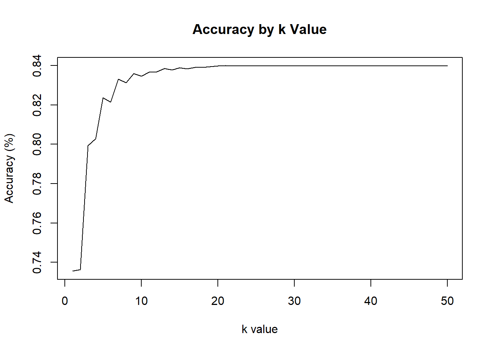
MeanSpecificity = colMeans(masterSensitivity)
which.max(MeanSpecificity)## [1] 21max(MeanSpecificity)## [1] 1mean(MeanSpecificity) #average KNN specificity## [1] 0.9878007plot(seq(1,numks,1),MeanSpecificity, type = "l", xlab = "k value", ylab = "Specificity (%)", main ="Specificity by k Value")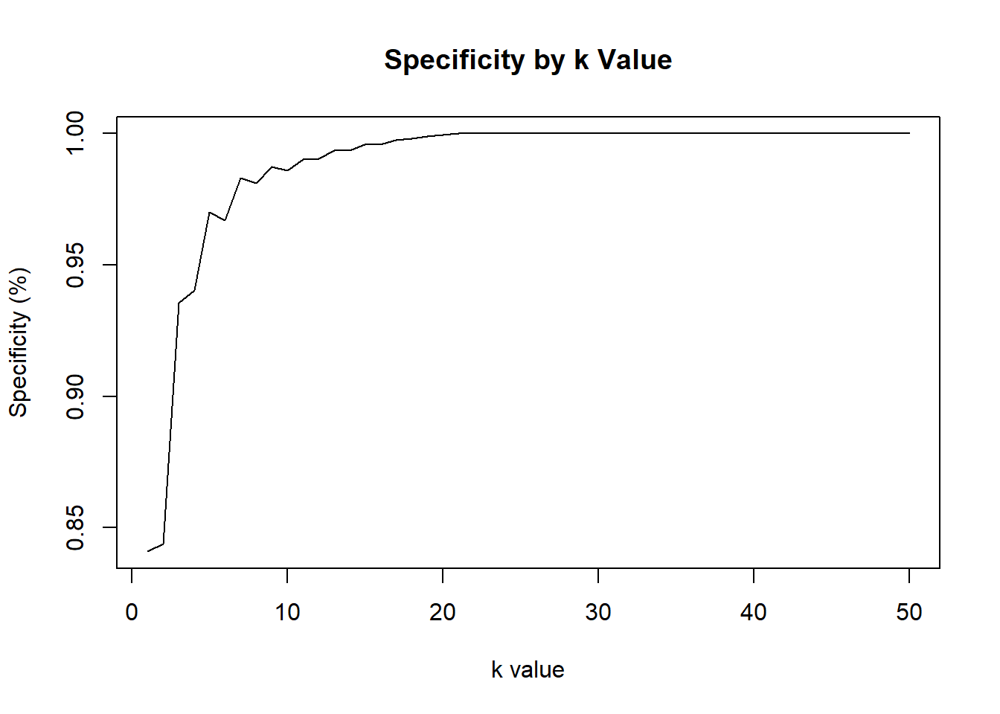
## k-NN model for k=2
#Split data into train and test using cross validation in ratio of 70% train and 30% test
set.seed(1)
train <- sample(1:nrow(employee3), nrow(employee3)*.7)
test = -train
modeldata <- employee3[train,]
validationdata <- employee3[test,]
cat("Train data has", nrow(modeldata),"observations")## Train data has 609 observationscat("Test data has", nrow(validationdata),"observations")## Test data has 261 observations# k-NN classification
classifications = knn(modeldata[,-2], validationdata[,-2], modeldata$Attrition, prob = TRUE, k = 2)
table(classifications,validationdata$Attrition)##
## classifications 0 1
## 0 181 38
## 1 34 8CM = confusionMatrix(table(classifications,validationdata$Attrition))
CM## Confusion Matrix and Statistics
##
##
## classifications 0 1
## 0 181 38
## 1 34 8
##
## Accuracy : 0.7241
## 95% CI : (0.6657, 0.7775)
## No Information Rate : 0.8238
## P-Value [Acc > NIR] : 1.0000
##
## Kappa : 0.0163
##
## Mcnemar's Test P-Value : 0.7237
##
## Sensitivity : 0.8419
## Specificity : 0.1739
## Pos Pred Value : 0.8265
## Neg Pred Value : 0.1905
## Prevalence : 0.8238
## Detection Rate : 0.6935
## Detection Prevalence : 0.8391
## Balanced Accuracy : 0.5079
##
## 'Positive' Class : 0
## ## k-NN model - Leave One Out k-NN or Internal CV k-NN
classifications = knn.cv(employee3[,-2], employee3$Attrition, prob = TRUE, k = 2)
confusionMatrix(table(classifications,employee3$Attrition))## Confusion Matrix and Statistics
##
##
## classifications 0 1
## 0 605 116
## 1 125 24
##
## Accuracy : 0.723
## 95% CI : (0.692, 0.7525)
## No Information Rate : 0.8391
## P-Value [Acc > NIR] : 1.0000
##
## Kappa : 2e-04
##
## Mcnemar's Test P-Value : 0.6063
##
## Sensitivity : 0.8288
## Specificity : 0.1714
## Pos Pred Value : 0.8391
## Neg Pred Value : 0.1611
## Prevalence : 0.8391
## Detection Rate : 0.6954
## Detection Prevalence : 0.8287
## Balanced Accuracy : 0.5001
##
## 'Positive' Class : 0
## employee4 <- employee3
Classcount = table(employee4$Attrition)
# Over Sampling
over = ( (0.6 * max(Classcount)) - min(Classcount) ) / min(Classcount)
# Under Sampling
under = (0.4 * max(Classcount)) / (min(Classcount) * over)
over = round(over, 1) * 100
under = round(under, 1) * 100
employee4$Attrition = factor(employee4$Attrition)
#Generate the balanced data set
BalancedData = DMwR::SMOTE(Attrition~., employee4, perc.over = over, k = 5, perc.under = under)
# let check the output of the Balancing
BalancedData %>%
group_by(Attrition) %>%
tally() %>%
ggplot(aes(x = Attrition, y = n,fill=Attrition)) +
geom_bar(stat = "identity") +
theme_minimal()+
labs(x="Attrition", y="Count of Attrition")+
ggtitle("Attrition")+
geom_text(aes(label = n), vjust = -0.5, position = position_dodge(0.9))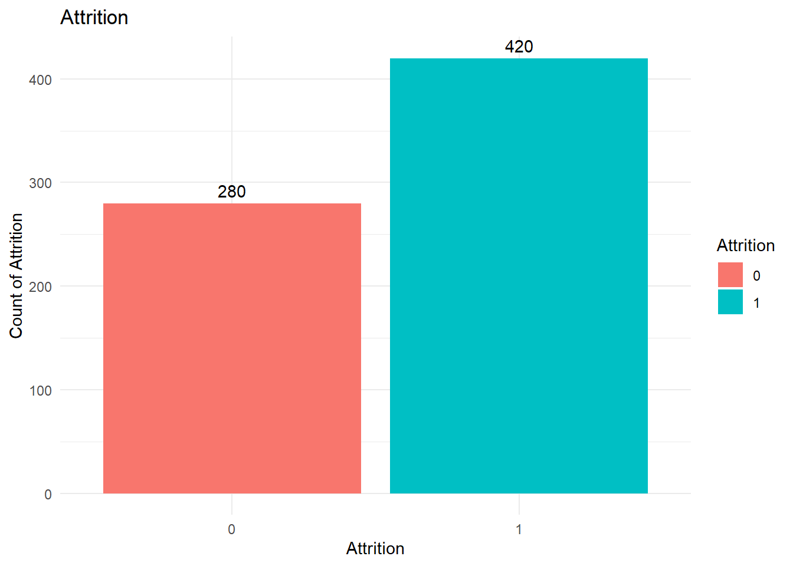
## k-NN model for k=2
#Split data into train and test using cross validation in ratio of 70% train and 30% test
set.seed(1)
train <- sample(1:nrow(BalancedData), nrow(BalancedData)*.7)
test = -train
modeldata <- BalancedData[train,]
validationdata <- BalancedData[test,]
cat("Train data has", nrow(modeldata),"observations")## Train data has 489 observationscat("Test data has", nrow(validationdata),"observations")## Test data has 211 observations# k-NN classifications for full model using all the predictor variables on the balanaced data
classifications = knn(modeldata[,-2], validationdata[,-2], modeldata$Attrition, prob = TRUE, k = 7)
#table(classifications,validationdata$Attrition)
CM = confusionMatrix(table(classifications,validationdata$Attrition))
CM## Confusion Matrix and Statistics
##
##
## classifications 0 1
## 0 36 21
## 1 52 102
##
## Accuracy : 0.654
## 95% CI : (0.5857, 0.718)
## No Information Rate : 0.5829
## P-Value [Acc > NIR] : 0.020707
##
## Kappa : 0.2509
##
## Mcnemar's Test P-Value : 0.000446
##
## Sensitivity : 0.4091
## Specificity : 0.8293
## Pos Pred Value : 0.6316
## Neg Pred Value : 0.6623
## Prevalence : 0.4171
## Detection Rate : 0.1706
## Detection Prevalence : 0.2701
## Balanced Accuracy : 0.6192
##
## 'Positive' Class : 0
## # load "Competition Set" on No Attrition dataset
employeeCompSet = read.csv(file = "C:/Users/seema/Documents/Personal/Study/Data Science at SMU/CaseStudy2CompSet No Attrition.csv", header = TRUE, sep = ",")
dim(employeeCompSet)## [1] 300 35head(employeeCompSet,4)## ID Age BusinessTravel DailyRate Department
## 1 1171 35 Travel_Rarely 750 Research & Development
## 2 1172 33 Travel_Rarely 147 Human Resources
## 3 1173 26 Travel_Rarely 1330 Research & Development
## 4 1174 55 Travel_Rarely 1311 Research & Development
## DistanceFromHome Education EducationField EmployeeCount EmployeeNumber
## 1 28 3 Life Sciences 1 1596
## 2 2 3 Human Resources 1 1207
## 3 21 3 Medical 1 1107
## 4 2 3 Life Sciences 1 505
## EnvironmentSatisfaction Gender HourlyRate JobInvolvement JobLevel
## 1 2 Male 46 4 2
## 2 2 Male 99 3 1
## 3 1 Male 37 3 1
## 4 3 Female 97 3 4
## JobRole JobSatisfaction MaritalStatus MonthlyIncome
## 1 Laboratory Technician 3 Married 3407
## 2 Human Resources 3 Married 3600
## 3 Laboratory Technician 3 Divorced 2377
## 4 Manager 4 Single 16659
## MonthlyRate NumCompaniesWorked Over18 OverTime PercentSalaryHike
## 1 25348 1 Y No 17
## 2 8429 1 Y No 13
## 3 19373 1 Y No 20
## 4 23258 2 Y Yes 13
## PerformanceRating RelationshipSatisfaction StandardHours
## 1 3 4 80
## 2 3 4 80
## 3 4 3 80
## 4 3 3 80
## StockOptionLevel TotalWorkingYears TrainingTimesLastYear WorkLifeBalance
## 1 2 10 3 2
## 2 1 5 2 3
## 3 1 1 0 2
## 4 0 30 2 3
## YearsAtCompany YearsInCurrentRole YearsSinceLastPromotion
## 1 10 9 6
## 2 5 4 1
## 3 1 1 0
## 4 5 4 1
## YearsWithCurrManager
## 1 8
## 2 4
## 3 0
## 4 2summary(employeeCompSet)## ID Age BusinessTravel DailyRate
## Min. :1171 Min. :19.00 Non-Travel : 32 Min. : 102.0
## 1st Qu.:1246 1st Qu.:31.00 Travel_Frequently: 57 1st Qu.: 448.0
## Median :1320 Median :36.00 Travel_Rarely :211 Median : 775.0
## Mean :1320 Mean :37.86 Mean : 784.8
## 3rd Qu.:1395 3rd Qu.:44.00 3rd Qu.:1117.0
## Max. :1470 Max. :60.00 Max. :1490.0
##
## Department DistanceFromHome Education
## Human Resources : 11 Min. : 1.00 Min. :1.000
## Research & Development:209 1st Qu.: 2.00 1st Qu.:2.000
## Sales : 80 Median : 7.00 Median :3.000
## Mean : 9.26 Mean :2.973
## 3rd Qu.:14.00 3rd Qu.:4.000
## Max. :29.00 Max. :5.000
##
## EducationField EmployeeCount EmployeeNumber
## Human Resources : 7 Min. :1 Min. : 2.0
## Life Sciences :130 1st Qu.:1 1st Qu.: 508.8
## Marketing : 27 Median :1 Median : 994.5
## Medical : 94 Mean :1 Mean :1020.9
## Other : 12 3rd Qu.:1 3rd Qu.:1542.5
## Technical Degree: 30 Max. :1 Max. :2065.0
##
## EnvironmentSatisfaction Gender HourlyRate JobInvolvement
## Min. :1.000 Female:105 Min. : 30.00 Min. :1.000
## 1st Qu.:2.000 Male :195 1st Qu.: 50.00 1st Qu.:2.000
## Median :3.000 Median : 66.00 Median :3.000
## Mean :2.733 Mean : 66.07 Mean :2.743
## 3rd Qu.:4.000 3rd Qu.: 83.00 3rd Qu.:3.000
## Max. :4.000 Max. :100.00 Max. :4.000
##
## JobLevel JobRole JobSatisfaction
## Min. :1.0 Research Scientist :61 Min. :1.000
## 1st Qu.:1.0 Sales Executive :57 1st Qu.:2.000
## Median :2.0 Laboratory Technician :55 Median :3.000
## Mean :2.2 Manufacturing Director :31 Mean :2.767
## 3rd Qu.:3.0 Manager :30 3rd Qu.:4.000
## Max. :5.0 Healthcare Representative:29 Max. :4.000
## (Other) :37
## MaritalStatus MonthlyIncome MonthlyRate NumCompaniesWorked Over18
## Divorced: 65 Min. : 1232 Min. : 2097 Min. :0.000 Y:300
## Married :128 1st Qu.: 3034 1st Qu.: 8420 1st Qu.:1.000
## Single :107 Median : 5208 Median :15091 Median :2.000
## Mean : 7103 Mean :14499 Mean :2.547
## 3rd Qu.: 9750 3rd Qu.:20330 3rd Qu.:4.000
## Max. :19973 Max. :26914 Max. :9.000
##
## OverTime PercentSalaryHike PerformanceRating RelationshipSatisfaction
## No :212 Min. :11.00 Min. :3.000 Min. :1.000
## Yes: 88 1st Qu.:12.00 1st Qu.:3.000 1st Qu.:2.000
## Median :14.00 Median :3.000 Median :3.000
## Mean :15.17 Mean :3.153 Mean :2.803
## 3rd Qu.:18.00 3rd Qu.:3.000 3rd Qu.:4.000
## Max. :25.00 Max. :4.000 Max. :4.000
##
## StandardHours StockOptionLevel TotalWorkingYears TrainingTimesLastYear
## Min. :80 Min. :0.0000 Min. : 0.00 Min. :0.000
## 1st Qu.:80 1st Qu.:0.0000 1st Qu.: 6.00 1st Qu.:2.000
## Median :80 Median :1.0000 Median :10.00 Median :2.000
## Mean :80 Mean :0.7833 Mean :12.44 Mean :2.683
## 3rd Qu.:80 3rd Qu.:1.0000 3rd Qu.:18.00 3rd Qu.:3.000
## Max. :80 Max. :3.0000 Max. :38.00 Max. :6.000
##
## WorkLifeBalance YearsAtCompany YearsInCurrentRole
## Min. :1.000 Min. : 0.000 Min. : 0.00
## 1st Qu.:2.000 1st Qu.: 3.000 1st Qu.: 2.00
## Median :3.000 Median : 5.000 Median : 3.00
## Mean :2.747 Mean : 7.527 Mean : 4.33
## 3rd Qu.:3.000 3rd Qu.:10.000 3rd Qu.: 7.00
## Max. :4.000 Max. :37.000 Max. :18.00
##
## YearsSinceLastPromotion YearsWithCurrManager
## Min. : 0.00 Min. : 0.00
## 1st Qu.: 0.00 1st Qu.: 2.00
## Median : 1.00 Median : 3.00
## Mean : 2.29 Mean : 4.38
## 3rd Qu.: 3.00 3rd Qu.: 7.00
## Max. :15.00 Max. :17.00
## #check for NA values
table(is.na(employeeCompSet))##
## FALSE
## 10500#Checking the missing value
sapply(employeeCompSet, function(x) sum(is.na(x)))## ID Age BusinessTravel
## 0 0 0
## DailyRate Department DistanceFromHome
## 0 0 0
## Education EducationField EmployeeCount
## 0 0 0
## EmployeeNumber EnvironmentSatisfaction Gender
## 0 0 0
## HourlyRate JobInvolvement JobLevel
## 0 0 0
## JobRole JobSatisfaction MaritalStatus
## 0 0 0
## MonthlyIncome MonthlyRate NumCompaniesWorked
## 0 0 0
## Over18 OverTime PercentSalaryHike
## 0 0 0
## PerformanceRating RelationshipSatisfaction StandardHours
## 0 0 0
## StockOptionLevel TotalWorkingYears TrainingTimesLastYear
## 0 0 0
## WorkLifeBalance YearsAtCompany YearsInCurrentRole
## 0 0 0
## YearsSinceLastPromotion YearsWithCurrManager
## 0 0#check for duplicated values
sum(duplicated(employeeCompSet)) ## [1] 0#see data frame dimensions and column data types
#str(employeeCompSet)
# remove some variable whose value is not changing. So standard deviation of that variable is zero. So it is not Significant for analysis. Those variable are ID, Employee Count, Employee Number, Over18, StandardHours
employeeCompSetReduceCols <- employeeCompSet[, -c(1,9,10,22,27)]
employeeCompSet2 <- employeeCompSetReduceCols
# Changing the class of variable from numeric to factor
employeeCompSet2$Education <- factor(employeeCompSet2$Education)
employeeCompSet2$EnvironmentSatisfaction <- factor(employeeCompSet2$EnvironmentSatisfaction)
employeeCompSet2$JobInvolvement <- factor(employeeCompSet2$JobInvolvement)
employeeCompSet2$JobLevel <- factor(employeeCompSet2$JobLevel)
employeeCompSet2$JobSatisfaction <- factor(employeeCompSet2$JobSatisfaction)
employeeCompSet2$PerformanceRating <- factor(employeeCompSet2$PerformanceRating)
employeeCompSet2$RelationshipSatisfaction <- factor(employeeCompSet2$RelationshipSatisfaction)
employeeCompSet2$StockOptionLevel <- factor(employeeCompSet2$StockOptionLevel)
employeeCompSet2$WorkLifeBalance <- factor(employeeCompSet2$WorkLifeBalance)
# Changing the categorical variables to dummy variable so that the variables can be used for fit in the classification model
dmy <- dummyVars(" ~ .", data = employeeCompSet2, fullRank=T)
employeeCompSet3 <- data.frame(predict(dmy, newdata = employeeCompSet2))
print(str(employeeCompSet3))## 'data.frame': 300 obs. of 62 variables:
## $ Age : num 35 33 26 55 29 51 52 39 31 31 ...
## $ BusinessTravel.Travel_Frequently : num 0 0 0 0 0 1 0 0 0 1 ...
## $ BusinessTravel.Travel_Rarely : num 1 1 1 1 1 0 0 1 1 0 ...
## $ DailyRate : num 750 147 1330 1311 1246 ...
## $ Department.Research...Development: num 1 0 1 1 0 1 0 1 1 1 ...
## $ Department.Sales : num 0 0 0 0 1 0 1 0 0 0 ...
## $ DistanceFromHome : num 28 2 21 2 19 1 29 10 24 20 ...
## $ Education.2 : num 0 0 0 0 0 0 0 0 0 0 ...
## $ Education.3 : num 1 1 1 1 1 0 0 0 1 1 ...
## $ Education.4 : num 0 0 0 0 0 1 1 0 0 0 ...
## $ Education.5 : num 0 0 0 0 0 0 0 1 0 0 ...
## $ EducationField.Life.Sciences : num 1 0 0 1 1 0 1 0 0 1 ...
## $ EducationField.Marketing : num 0 0 0 0 0 0 0 0 0 0 ...
## $ EducationField.Medical : num 0 0 1 0 0 1 0 1 1 0 ...
## $ EducationField.Other : num 0 0 0 0 0 0 0 0 0 0 ...
## $ EducationField.Technical.Degree : num 0 0 0 0 0 0 0 0 0 0 ...
## $ EnvironmentSatisfaction.2 : num 1 1 0 0 0 0 0 1 0 0 ...
## $ EnvironmentSatisfaction.3 : num 0 0 0 1 1 0 0 0 1 0 ...
## $ EnvironmentSatisfaction.4 : num 0 0 0 0 0 0 0 0 0 0 ...
## $ Gender.Male : num 1 1 1 0 1 0 1 1 0 1 ...
## $ HourlyRate : num 46 99 37 97 77 30 40 76 96 66 ...
## $ JobInvolvement.2 : num 0 0 0 0 1 1 0 0 1 0 ...
## $ JobInvolvement.3 : num 0 1 1 1 0 0 1 1 0 1 ...
## $ JobInvolvement.4 : num 1 0 0 0 0 0 0 0 0 0 ...
## $ JobLevel.2 : num 1 0 0 0 1 0 0 1 1 0 ...
## $ JobLevel.3 : num 0 0 0 0 0 1 0 0 0 1 ...
## $ JobLevel.4 : num 0 0 0 1 0 0 0 0 0 0 ...
## $ JobLevel.5 : num 0 0 0 0 0 0 0 0 0 0 ...
## $ JobRole.Human.Resources : num 0 1 0 0 0 0 0 0 0 0 ...
## $ JobRole.Laboratory.Technician : num 1 0 1 0 0 0 0 0 0 0 ...
## $ JobRole.Manager : num 0 0 0 1 0 0 0 0 0 0 ...
## $ JobRole.Manufacturing.Director : num 0 0 0 0 0 0 0 1 0 0 ...
## $ JobRole.Research.Director : num 0 0 0 0 0 0 0 0 0 0 ...
## $ JobRole.Research.Scientist : num 0 0 0 0 0 0 0 0 0 0 ...
## $ JobRole.Sales.Executive : num 0 0 0 0 1 0 0 0 0 0 ...
## $ JobRole.Sales.Representative : num 0 0 0 0 0 0 1 0 0 0 ...
## $ JobSatisfaction.2 : num 0 0 0 0 0 0 0 0 0 0 ...
## $ JobSatisfaction.3 : num 1 1 1 0 1 0 0 0 0 1 ...
## $ JobSatisfaction.4 : num 0 0 0 1 0 0 1 0 0 0 ...
## $ MaritalStatus.Married : num 1 1 0 0 0 0 0 1 0 1 ...
## $ MaritalStatus.Single : num 0 0 0 1 0 1 0 0 1 0 ...
## $ MonthlyIncome : num 3407 3600 2377 16659 8620 ...
## $ MonthlyRate : num 25348 8429 19373 23258 23757 ...
## $ NumCompaniesWorked : num 1 1 1 2 1 3 2 2 1 3 ...
## $ OverTime.Yes : num 0 0 0 1 0 0 0 0 0 0 ...
## $ PercentSalaryHike : num 17 13 20 13 14 20 15 13 19 12 ...
## $ PerformanceRating.4 : num 0 0 1 0 0 1 0 0 0 0 ...
## $ RelationshipSatisfaction.2 : num 0 0 0 0 0 0 1 0 1 0 ...
## $ RelationshipSatisfaction.3 : num 0 0 1 1 1 1 0 0 0 0 ...
## $ RelationshipSatisfaction.4 : num 1 1 0 0 0 0 0 1 0 0 ...
## $ StockOptionLevel.1 : num 0 1 1 0 0 0 0 0 0 0 ...
## $ StockOptionLevel.2 : num 1 0 0 0 1 0 1 0 0 0 ...
## $ StockOptionLevel.3 : num 0 0 0 0 0 0 0 1 0 0 ...
## $ TotalWorkingYears : num 10 5 1 30 10 23 16 10 10 12 ...
## $ TrainingTimesLastYear : num 3 2 0 2 3 1 3 3 2 2 ...
## $ WorkLifeBalance.2 : num 1 0 1 0 0 1 1 0 0 0 ...
## $ WorkLifeBalance.3 : num 0 1 0 1 1 0 0 1 1 1 ...
## $ WorkLifeBalance.4 : num 0 0 0 0 0 0 0 0 0 0 ...
## $ YearsAtCompany : num 10 5 1 5 10 13 9 7 10 1 ...
## $ YearsInCurrentRole : num 9 4 1 4 7 12 8 7 9 0 ...
## $ YearsSinceLastPromotion : num 6 1 0 1 0 12 0 7 1 0 ...
## $ YearsWithCurrManager : num 8 4 0 2 4 8 0 7 8 0 ...
## NULLvalidationdata2 <- employeeCompSet3
# Accessing the predictive ability of the logistic regression model
log_pred <- predict(logmodel,newdata=validationdata2,type='response')
log_pred <- ifelse(log_pred>=0.5,1,0)
# merge predicted variable to the CompSet file
mergedataemployeeCompSet <- merge(employeeCompSet$ID, log_pred, by=0, all=TRUE)
#dim(mergedataemployeeCompSet)
#head(mergedataemployeeCompSet,2)
mergedataemployeeCompSet$y <- ifelse(mergedataemployeeCompSet$y == 1,"Yes","No")
colnames(mergedataemployeeCompSet)[colnames(mergedataemployeeCompSet)=="Row.names"] <- "RowNumber"
colnames(mergedataemployeeCompSet)[colnames(mergedataemployeeCompSet)=="x"] <- "ID"
colnames(mergedataemployeeCompSet)[colnames(mergedataemployeeCompSet)=="y"] <- "Attrition"
classifyemployeeCompSet <- mergedataemployeeCompSet[order(mergedataemployeeCompSet$ID),] %>% dplyr::select(ID, Attrition)
#dim(classifyemployeeCompSet)
# write to csv file for classifying dataset for the "Competition Set" on Attrition
write.csv(classifyemployeeCompSet, file = "Case2PredictionsSrivastava Attrition.csv", row.names=FALSE)## Linear Regression model
#Split data into train and test using cross validation in ratio of 70% train and 30% test
set.seed(2017)
train <- sample(1:nrow(employee3), nrow(employee3)*.7)
test = -train
modeldata <- employee3[train,]
validationdata <- employee3[test,]
cat("Train data has", nrow(modeldata),"observations")## Train data has 609 observationscat("Test data has", nrow(validationdata),"observations")## Test data has 261 observations# Fit the Linear Regression model for predicting monthly incomes (salaries)
Model1_fit = lm(MonthlyIncome~., data = modeldata)
summary(Model1_fit)##
## Call:
## lm(formula = MonthlyIncome ~ ., data = modeldata)
##
## Residuals:
## Min 1Q Median 3Q Max
## -3157.3 -567.3 -44.7 543.7 4409.8
##
## Coefficients:
## Estimate Std. Error t value Pr(>|t|)
## (Intercept) 2.525e+03 8.369e+02 3.017 0.002673
## Age 1.225e+00 6.650e+00 0.184 0.853938
## Attrition -1.355e+02 1.347e+02 -1.006 0.314948
## BusinessTravel.Travel_Frequently 3.117e+02 1.629e+02 1.914 0.056188
## BusinessTravel.Travel_Rarely 4.563e+02 1.383e+02 3.298 0.001036
## DailyRate 1.888e-01 1.056e-01 1.788 0.074307
## Department.Research...Development 2.565e+02 6.071e+02 0.423 0.672811
## Department.Sales -2.744e+02 6.359e+02 -0.432 0.666273
## DistanceFromHome -7.556e+00 5.286e+00 -1.429 0.153482
## Education.2 -9.050e+01 1.540e+02 -0.588 0.557002
## Education.3 -1.947e+02 1.386e+02 -1.405 0.160547
## Education.4 1.564e+01 1.498e+02 0.104 0.916910
## Education.5 -6.566e+02 2.844e+02 -2.309 0.021335
## EducationField.Life.Sciences 1.041e+02 4.304e+02 0.242 0.809052
## EducationField.Marketing 1.798e+02 4.550e+02 0.395 0.692777
## EducationField.Medical 8.460e+01 4.318e+02 0.196 0.844740
## EducationField.Other 5.163e+01 4.584e+02 0.113 0.910364
## EducationField.Technical.Degree 1.651e+02 4.526e+02 0.365 0.715444
## EnvironmentSatisfaction.2 -2.565e+01 1.309e+02 -0.196 0.844695
## EnvironmentSatisfaction.3 -1.021e+02 1.208e+02 -0.846 0.398052
## EnvironmentSatisfaction.4 -1.028e+02 1.224e+02 -0.840 0.401000
## Gender.Male 1.377e+02 8.511e+01 1.617 0.106367
## HourlyRate 5.521e-01 2.062e+00 0.268 0.789005
## JobInvolvement.2 -1.197e+02 1.850e+02 -0.647 0.517712
## JobInvolvement.3 -2.117e+02 1.765e+02 -1.199 0.230969
## JobInvolvement.4 1.143e+01 2.140e+02 0.053 0.957437
## JobLevel.2 1.798e+03 1.830e+02 9.823 < 2e-16
## JobLevel.3 5.089e+03 2.327e+02 21.868 < 2e-16
## JobLevel.4 8.536e+03 3.431e+02 24.876 < 2e-16
## JobLevel.5 1.111e+04 4.098e+02 27.109 < 2e-16
## JobRole.Human.Resources -4.738e+02 6.498e+02 -0.729 0.466194
## JobRole.Laboratory.Technician -1.119e+03 2.200e+02 -5.087 5.00e-07
## JobRole.Manager 3.584e+03 3.227e+02 11.108 < 2e-16
## JobRole.Manufacturing.Director 1.101e+02 1.923e+02 0.572 0.567337
## JobRole.Research.Director 3.487e+03 2.540e+02 13.730 < 2e-16
## JobRole.Research.Scientist -9.030e+02 2.240e+02 -4.031 6.33e-05
## JobRole.Sales.Executive 4.245e+02 4.018e+02 1.056 0.291225
## JobRole.Sales.Representative -6.677e+02 4.598e+02 -1.452 0.146981
## JobSatisfaction.2 -1.288e+02 1.338e+02 -0.963 0.336173
## JobSatisfaction.3 5.170e+01 1.206e+02 0.429 0.668376
## JobSatisfaction.4 7.122e+01 1.191e+02 0.598 0.549947
## MaritalStatus.Married 1.332e+02 1.143e+02 1.166 0.244115
## MaritalStatus.Single 1.628e+02 1.736e+02 0.938 0.348695
## MonthlyRate -8.087e-03 5.885e-03 -1.374 0.169933
## NumCompaniesWorked 1.992e+01 1.952e+01 1.021 0.307834
## OverTime.Yes 4.279e+01 9.620e+01 0.445 0.656677
## PercentSalaryHike 1.121e+01 1.800e+01 0.623 0.533614
## PerformanceRating.4 -1.649e+02 1.852e+02 -0.891 0.373536
## RelationshipSatisfaction.2 1.224e+02 1.325e+02 0.923 0.356228
## RelationshipSatisfaction.3 1.240e+01 1.217e+02 0.102 0.918882
## RelationshipSatisfaction.4 5.423e+00 1.198e+02 0.045 0.963913
## StockOptionLevel.1 1.202e+01 1.363e+02 0.088 0.929790
## StockOptionLevel.2 9.864e+01 1.844e+02 0.535 0.592888
## StockOptionLevel.3 -4.301e+00 2.132e+02 -0.020 0.983912
## TotalWorkingYears 4.557e+01 1.293e+01 3.523 0.000462
## TrainingTimesLastYear 3.189e+01 3.400e+01 0.938 0.348666
## WorkLifeBalance.2 8.843e+00 2.024e+02 0.044 0.965173
## WorkLifeBalance.3 6.707e+00 1.911e+02 0.035 0.972014
## WorkLifeBalance.4 -1.012e+02 2.215e+02 -0.457 0.647919
## YearsAtCompany -5.352e+00 1.591e+01 -0.336 0.736683
## YearsInCurrentRole 6.226e+00 1.962e+01 0.317 0.751129
## YearsSinceLastPromotion 1.782e+01 1.776e+01 1.003 0.316104
## YearsWithCurrManager -1.306e+01 1.920e+01 -0.680 0.496719
##
## (Intercept) **
## Age
## Attrition
## BusinessTravel.Travel_Frequently .
## BusinessTravel.Travel_Rarely **
## DailyRate .
## Department.Research...Development
## Department.Sales
## DistanceFromHome
## Education.2
## Education.3
## Education.4
## Education.5 *
## EducationField.Life.Sciences
## EducationField.Marketing
## EducationField.Medical
## EducationField.Other
## EducationField.Technical.Degree
## EnvironmentSatisfaction.2
## EnvironmentSatisfaction.3
## EnvironmentSatisfaction.4
## Gender.Male
## HourlyRate
## JobInvolvement.2
## JobInvolvement.3
## JobInvolvement.4
## JobLevel.2 ***
## JobLevel.3 ***
## JobLevel.4 ***
## JobLevel.5 ***
## JobRole.Human.Resources
## JobRole.Laboratory.Technician ***
## JobRole.Manager ***
## JobRole.Manufacturing.Director
## JobRole.Research.Director ***
## JobRole.Research.Scientist ***
## JobRole.Sales.Executive
## JobRole.Sales.Representative
## JobSatisfaction.2
## JobSatisfaction.3
## JobSatisfaction.4
## MaritalStatus.Married
## MaritalStatus.Single
## MonthlyRate
## NumCompaniesWorked
## OverTime.Yes
## PercentSalaryHike
## PerformanceRating.4
## RelationshipSatisfaction.2
## RelationshipSatisfaction.3
## RelationshipSatisfaction.4
## StockOptionLevel.1
## StockOptionLevel.2
## StockOptionLevel.3
## TotalWorkingYears ***
## TrainingTimesLastYear
## WorkLifeBalance.2
## WorkLifeBalance.3
## WorkLifeBalance.4
## YearsAtCompany
## YearsInCurrentRole
## YearsSinceLastPromotion
## YearsWithCurrManager
## ---
## Signif. codes: 0 '***' 0.001 '**' 0.01 '*' 0.05 '.' 0.1 ' ' 1
##
## Residual standard error: 986.9 on 546 degrees of freedom
## Multiple R-squared: 0.9584, Adjusted R-squared: 0.9536
## F-statistic: 202.7 on 62 and 546 DF, p-value: < 2.2e-16#confint(Model1_fit)
Model1_Preds = predict(Model1_fit, newdata = validationdata)
#Accuracy Statistics for the Linear Regression model
#MSE for the Linear Regression model
MSE = mean((validationdata$MonthlyIncome - Model1_Preds)^2)
MSE## [1] 1200291#RMSE (Root Mean square error) for the Linear Regression model
RMSE = sqrt(MSE)
RMSE## [1] 1095.578# load "Competition Set" on No Monthly Incomes dataset having no Salary
MonthlyIncomeCompSet = read.csv(file = "C:/Users/seema/Documents/Personal/Study/Data Science at SMU/CaseStudy2CompSetNoSalary.csv", header = TRUE, sep = ",")
dim(MonthlyIncomeCompSet)## [1] 300 35head(MonthlyIncomeCompSet,4)## ID Age Attrition BusinessTravel DailyRate Department
## 1 871 43 No Travel_Frequently 1422 Sales
## 2 872 33 No Travel_Rarely 461 Research & Development
## 3 873 55 Yes Travel_Rarely 267 Sales
## 4 874 36 No Non-Travel 1351 Research & Development
## DistanceFromHome Education EducationField EmployeeCount EmployeeNumber
## 1 2 4 Life Sciences 1 1849
## 2 13 1 Life Sciences 1 995
## 3 13 4 Marketing 1 1372
## 4 9 4 Life Sciences 1 1949
## EnvironmentSatisfaction Gender HourlyRate JobInvolvement JobLevel
## 1 1 Male 92 3 2
## 2 2 Female 53 3 1
## 3 1 Male 85 4 4
## 4 1 Male 66 4 1
## JobRole JobSatisfaction MaritalStatus MonthlyRate
## 1 Sales Executive 4 Married 19246
## 2 Research Scientist 4 Single 17241
## 3 Sales Executive 3 Single 9277
## 4 Laboratory Technician 2 Married 9238
## NumCompaniesWorked Over18 OverTime PercentSalaryHike PerformanceRating
## 1 1 Y No 20 4
## 2 3 Y No 18 3
## 3 6 Y Yes 17 3
## 4 1 Y No 22 4
## RelationshipSatisfaction StandardHours StockOptionLevel
## 1 3 80 1
## 2 1 80 0
## 3 3 80 0
## 4 2 80 0
## TotalWorkingYears TrainingTimesLastYear WorkLifeBalance YearsAtCompany
## 1 7 5 3 7
## 2 5 4 3 3
## 3 24 2 2 19
## 4 5 3 3 5
## YearsInCurrentRole YearsSinceLastPromotion YearsWithCurrManager
## 1 7 7 7
## 2 2 0 2
## 3 7 3 8
## 4 4 0 2summary(MonthlyIncomeCompSet)## ID Age Attrition BusinessTravel
## Min. : 871.0 Min. :18.00 No :249 Non-Travel : 24
## 1st Qu.: 945.8 1st Qu.:29.00 Yes: 51 Travel_Frequently: 62
## Median :1020.5 Median :36.00 Travel_Rarely :214
## Mean :1020.5 Mean :36.27
## 3rd Qu.:1095.2 3rd Qu.:42.00
## Max. :1170.0 Max. :60.00
##
## DailyRate Department DistanceFromHome
## Min. : 105.0 Human Resources : 17 Min. : 1.00
## 1st Qu.: 429.2 Research & Development:190 1st Qu.: 2.00
## Median : 693.0 Sales : 93 Median : 7.00
## Mean : 783.2 Mean : 8.70
## 3rd Qu.:1171.2 3rd Qu.:11.25
## Max. :1492.0 Max. :29.00
##
## Education EducationField EmployeeCount EmployeeNumber
## Min. :1.000 Human Resources : 5 Min. :1 Min. : 7
## 1st Qu.:2.000 Life Sciences :118 1st Qu.:1 1st Qu.: 477
## Median :3.000 Marketing : 32 Median :1 Median :1008
## Mean :2.887 Medical :100 Mean :1 Mean :1014
## 3rd Qu.:4.000 Other : 18 3rd Qu.:1 3rd Qu.:1569
## Max. :5.000 Technical Degree: 27 Max. :1 Max. :2068
##
## EnvironmentSatisfaction Gender HourlyRate JobInvolvement
## Min. :1.00 Female:129 Min. : 30.00 Min. :1.000
## 1st Qu.:2.00 Male :171 1st Qu.: 48.00 1st Qu.:2.000
## Median :3.00 Median : 66.00 Median :3.000
## Mean :2.77 Mean : 66.52 Mean :2.737
## 3rd Qu.:4.00 3rd Qu.: 85.25 3rd Qu.:3.000
## Max. :4.00 Max. :100.00 Max. :4.000
##
## JobLevel JobRole JobSatisfaction MaritalStatus
## Min. :1 Sales Executive :69 Min. :1.000 Divorced: 71
## 1st Qu.:1 Research Scientist :59 1st Qu.:2.000 Married :135
## Median :2 Laboratory Technician :51 Median :3.000 Single : 94
## Mean :2 Manufacturing Director :27 Mean :2.747
## 3rd Qu.:2 Healthcare Representative:26 3rd Qu.:4.000
## Max. :5 Manager :21 Max. :4.000
## (Other) :47
## MonthlyRate NumCompaniesWorked Over18 OverTime PercentSalaryHike
## Min. : 2122 Min. :0.00 Y:300 No :224 Min. :11.00
## 1st Qu.: 7778 1st Qu.:1.00 Yes: 76 1st Qu.:12.75
## Median :13508 Median :2.00 Median :14.00
## Mean :14091 Mean :2.74 Mean :15.28
## 3rd Qu.:20464 3rd Qu.:4.00 3rd Qu.:18.00
## Max. :26999 Max. :9.00 Max. :25.00
##
## PerformanceRating RelationshipSatisfaction StandardHours StockOptionLevel
## Min. :3.00 Min. :1.000 Min. :80 Min. :0.0000
## 1st Qu.:3.00 1st Qu.:2.000 1st Qu.:80 1st Qu.:0.0000
## Median :3.00 Median :3.000 Median :80 Median :1.0000
## Mean :3.16 Mean :2.637 Mean :80 Mean :0.8333
## 3rd Qu.:3.00 3rd Qu.:4.000 3rd Qu.:80 3rd Qu.:1.0000
## Max. :4.00 Max. :4.000 Max. :80 Max. :3.0000
##
## TotalWorkingYears TrainingTimesLastYear WorkLifeBalance YearsAtCompany
## Min. : 0.00 Min. :0.00 Min. :1.000 Min. : 0.000
## 1st Qu.: 6.00 1st Qu.:2.00 1st Qu.:2.000 1st Qu.: 3.000
## Median : 9.00 Median :3.00 Median :3.000 Median : 5.000
## Mean :10.78 Mean :2.82 Mean :2.717 Mean : 6.623
## 3rd Qu.:14.00 3rd Qu.:3.00 3rd Qu.:3.000 3rd Qu.: 9.000
## Max. :40.00 Max. :6.00 Max. :4.000 Max. :33.000
##
## YearsInCurrentRole YearsSinceLastPromotion YearsWithCurrManager
## Min. : 0.0 Min. : 0.00 Min. : 0.000
## 1st Qu.: 2.0 1st Qu.: 0.00 1st Qu.: 2.000
## Median : 3.0 Median : 1.00 Median : 3.000
## Mean : 4.2 Mean : 2.14 Mean : 3.817
## 3rd Qu.: 7.0 3rd Qu.: 3.00 3rd Qu.: 7.000
## Max. :16.0 Max. :15.00 Max. :15.000
## #check for NA values
table(is.na(MonthlyIncomeCompSet))##
## FALSE
## 10500#Checking the missing value
sapply(MonthlyIncomeCompSet, function(x) sum(is.na(x)))## ID Age Attrition
## 0 0 0
## BusinessTravel DailyRate Department
## 0 0 0
## DistanceFromHome Education EducationField
## 0 0 0
## EmployeeCount EmployeeNumber EnvironmentSatisfaction
## 0 0 0
## Gender HourlyRate JobInvolvement
## 0 0 0
## JobLevel JobRole JobSatisfaction
## 0 0 0
## MaritalStatus MonthlyRate NumCompaniesWorked
## 0 0 0
## Over18 OverTime PercentSalaryHike
## 0 0 0
## PerformanceRating RelationshipSatisfaction StandardHours
## 0 0 0
## StockOptionLevel TotalWorkingYears TrainingTimesLastYear
## 0 0 0
## WorkLifeBalance YearsAtCompany YearsInCurrentRole
## 0 0 0
## YearsSinceLastPromotion YearsWithCurrManager
## 0 0#check for duplicated values
sum(duplicated(MonthlyIncomeCompSet)) ## [1] 0#see data frame dimensions and column data types
#str(employeeCompSet)
# remove some variable whose value is not changing. So standard deviation of that variable is zero. So it is not Significant for analysis. Those variable are ID, Employee Count, Employee Number, Over18, StandardHours
MonthlyIncomeCompSetReduceCols <- MonthlyIncomeCompSet[, -c(1,10,11,22,27)]
MonthlyIncomeCompSet2 <- MonthlyIncomeCompSetReduceCols
# Changing the class of variable from numeric to factor
MonthlyIncomeCompSet2$Education <- factor(MonthlyIncomeCompSet2$Education)
MonthlyIncomeCompSet2$EnvironmentSatisfaction <- factor(MonthlyIncomeCompSet2$EnvironmentSatisfaction)
MonthlyIncomeCompSet2$JobInvolvement <- factor(MonthlyIncomeCompSet2$JobInvolvement)
MonthlyIncomeCompSet2$JobLevel <- factor(MonthlyIncomeCompSet2$JobLevel)
MonthlyIncomeCompSet2$JobSatisfaction <- factor(MonthlyIncomeCompSet2$JobSatisfaction)
MonthlyIncomeCompSet2$PerformanceRating <- factor(MonthlyIncomeCompSet2$PerformanceRating)
MonthlyIncomeCompSet2$RelationshipSatisfaction <- factor(MonthlyIncomeCompSet2$RelationshipSatisfaction)
MonthlyIncomeCompSet2$StockOptionLevel <- factor(MonthlyIncomeCompSet2$StockOptionLevel)
MonthlyIncomeCompSet2$WorkLifeBalance <- factor(MonthlyIncomeCompSet2$WorkLifeBalance)
# Changing the Atrition variable value to 1 for 'Yes' and 0 for 'No'
MonthlyIncomeCompSet2$Attrition <- ifelse(MonthlyIncomeCompSet2$Attrition == "Yes",1,0)
# Changing the categorical variables to dummy variable so that the variables can be used for fit in the prediction model
dmy <- dummyVars(" ~ .", data = MonthlyIncomeCompSet2, fullRank=T)
MonthlyIncomeCompSet3 <- data.frame(predict(dmy, newdata = MonthlyIncomeCompSet2))
print(str(MonthlyIncomeCompSet3))## 'data.frame': 300 obs. of 62 variables:
## $ Age : num 43 33 55 36 27 39 33 21 30 51 ...
## $ Attrition : num 0 0 1 0 0 1 0 1 0 0 ...
## $ BusinessTravel.Travel_Frequently : num 1 0 0 0 0 0 0 1 1 0 ...
## $ BusinessTravel.Travel_Rarely : num 0 1 1 0 1 1 0 0 0 1 ...
## $ DailyRate : num 1422 461 267 1351 1302 ...
## $ Department.Research...Development: num 0 1 0 1 1 0 0 1 1 1 ...
## $ Department.Sales : num 1 0 1 0 0 1 1 0 0 0 ...
## $ DistanceFromHome : num 2 13 13 9 19 5 22 10 23 11 ...
## $ Education.2 : num 0 0 0 0 0 0 1 1 0 1 ...
## $ Education.3 : num 0 0 0 0 1 1 0 0 1 0 ...
## $ Education.4 : num 1 0 1 1 0 0 0 0 0 0 ...
## $ Education.5 : num 0 0 0 0 0 0 0 0 0 0 ...
## $ EducationField.Life.Sciences : num 1 1 0 1 0 0 0 1 1 0 ...
## $ EducationField.Marketing : num 0 0 1 0 0 0 1 0 0 0 ...
## $ EducationField.Medical : num 0 0 0 0 0 0 0 0 0 0 ...
## $ EducationField.Other : num 0 0 0 0 1 0 0 0 0 0 ...
## $ EducationField.Technical.Degree : num 0 0 0 0 0 1 0 0 0 1 ...
## $ EnvironmentSatisfaction.2 : num 0 1 0 0 0 0 0 0 0 0 ...
## $ EnvironmentSatisfaction.3 : num 0 0 0 0 0 0 1 0 0 0 ...
## $ EnvironmentSatisfaction.4 : num 0 0 0 0 1 1 0 0 0 1 ...
## $ Gender.Male : num 1 0 1 1 1 1 1 0 1 0 ...
## $ HourlyRate : num 92 53 85 66 67 56 95 45 96 82 ...
## $ JobInvolvement.2 : num 0 0 0 0 1 0 0 1 0 1 ...
## $ JobInvolvement.3 : num 1 1 0 0 0 1 1 0 0 0 ...
## $ JobInvolvement.4 : num 0 0 1 1 0 0 0 0 0 0 ...
## $ JobLevel.2 : num 1 0 0 0 0 1 1 0 0 0 ...
## $ JobLevel.3 : num 0 0 0 0 0 0 0 0 0 0 ...
## $ JobLevel.4 : num 0 0 1 0 0 0 0 0 0 1 ...
## $ JobLevel.5 : num 0 0 0 0 0 0 0 0 0 0 ...
## $ JobRole.Human.Resources : num 0 0 0 0 0 0 0 0 0 0 ...
## $ JobRole.Laboratory.Technician : num 0 0 0 1 1 0 0 1 0 0 ...
## $ JobRole.Manager : num 0 0 0 0 0 0 0 0 0 0 ...
## $ JobRole.Manufacturing.Director : num 0 0 0 0 0 0 0 0 0 1 ...
## $ JobRole.Research.Director : num 0 0 0 0 0 0 0 0 0 0 ...
## $ JobRole.Research.Scientist : num 0 1 0 0 0 0 0 0 1 0 ...
## $ JobRole.Sales.Executive : num 1 0 1 0 0 0 1 0 0 0 ...
## $ JobRole.Sales.Representative : num 0 0 0 0 0 1 0 0 0 0 ...
## $ JobSatisfaction.2 : num 0 0 0 1 0 0 1 0 0 1 ...
## $ JobSatisfaction.3 : num 0 0 1 0 0 0 0 1 1 0 ...
## $ JobSatisfaction.4 : num 1 1 0 0 0 1 0 0 0 0 ...
## $ MaritalStatus.Married : num 1 0 0 1 0 1 1 0 0 0 ...
## $ MaritalStatus.Single : num 0 1 1 0 0 0 0 1 0 1 ...
## $ MonthlyRate : num 19246 17241 9277 9238 16290 ...
## $ NumCompaniesWorked : num 1 3 6 1 1 3 0 1 1 3 ...
## $ OverTime.Yes : num 0 0 1 0 0 0 0 0 0 0 ...
## $ PercentSalaryHike : num 20 18 17 22 11 14 13 20 25 16 ...
## $ PerformanceRating.4 : num 1 0 0 1 0 0 0 1 1 0 ...
## $ RelationshipSatisfaction.2 : num 0 0 0 1 0 0 0 0 0 1 ...
## $ RelationshipSatisfaction.3 : num 1 0 1 0 0 1 0 1 1 0 ...
## $ RelationshipSatisfaction.4 : num 0 0 0 0 0 0 0 0 0 0 ...
## $ StockOptionLevel.1 : num 1 0 0 0 0 1 1 0 0 0 ...
## $ StockOptionLevel.2 : num 0 0 0 0 1 0 0 0 0 0 ...
## $ StockOptionLevel.3 : num 0 0 0 0 0 0 0 0 1 0 ...
## $ TotalWorkingYears : num 7 5 24 5 7 19 8 2 10 29 ...
## $ TrainingTimesLastYear : num 5 4 2 3 3 6 2 2 2 1 ...
## $ WorkLifeBalance.2 : num 0 0 1 0 0 0 0 0 1 1 ...
## $ WorkLifeBalance.3 : num 1 1 0 1 1 0 0 0 0 0 ...
## $ WorkLifeBalance.4 : num 0 0 0 0 0 1 1 0 0 0 ...
## $ YearsAtCompany : num 7 3 19 5 7 1 7 2 10 5 ...
## $ YearsInCurrentRole : num 7 2 7 4 7 0 7 2 7 2 ...
## $ YearsSinceLastPromotion : num 7 0 3 0 0 0 0 2 0 0 ...
## $ YearsWithCurrManager : num 7 2 8 2 7 0 7 2 9 3 ...
## NULLvalidationdata2 <- MonthlyIncomeCompSet3
# Accessing the predictive ability of the Linear Regression model on the CompSet dataset
MonthlyIncomeCompSet_preds <- predict(Model1_fit, newdata = validationdata2)
# merge predicted Monthly Income variable to the CompSet file
mergedataMonthlyIncomeCompSet <- merge(MonthlyIncomeCompSet$ID, MonthlyIncomeCompSet_preds, by=0, all=TRUE)
#dim(mergedataMonthlyIncomeCompSet)
#head(mergedataMonthlyIncomeCompSet,2)
# renaming the merged variable names
colnames(mergedataMonthlyIncomeCompSet)[colnames(mergedataMonthlyIncomeCompSet)=="Row.names"] <- "RowNumber"
colnames(mergedataMonthlyIncomeCompSet)[colnames(mergedataMonthlyIncomeCompSet)=="x"] <- "ID"
colnames(mergedataMonthlyIncomeCompSet)[colnames(mergedataMonthlyIncomeCompSet)=="y"] <- "MonthlyIncome"
predictMonthlyIncomeCompSet <- mergedataMonthlyIncomeCompSet[order(mergedataMonthlyIncomeCompSet$ID),] %>% dplyr::select(ID, MonthlyIncome)
#dim(predictMonthlyIncomeCompSet)
#head(predictMonthlyIncomeCompSet,2)
# write to csv file for predicting dataset for the "Competition Set" on Monthly Income
write.csv(predictMonthlyIncomeCompSet, file = "Case2PredictionsSrivastava Salary.csv", row.names=FALSE)